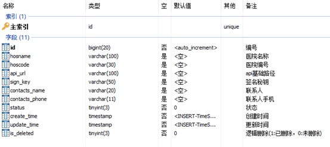

尚医通
尚医通问题解决+笔记
尚医通是网上预约挂号系统,运用了springboot框架,springcloud,redis,mq,linux,git
目的是熟练springcloud，springboot
前后端分离开发

能够做到微信登录/手机登录功能，支付挂号订单,预约挂号,首页信息显示。
服务架构👇
后台接口开发
需求
医院设置主要是用来保存开通医院的一些基本信息，每个医院一条信息，保存了医院编号（平台分配，全局唯一）和接口调用相关的签名key等信息，是整个流程的第一步，只有开通了医院设置信息，才可以上传医院相关信息。
我们所开发的功能就是基于单表的一个CRUD、锁定/解锁和发送签名信息这些基本功能。
表结构

hosname：医院名称
hoscode：医院编号（平台分配，全局唯一，api接口必填信息）
api_url：医院回调的基础url（如：预约下单，我们要调用该地址去医院下单）
sign_key：双方api接口调用的签名key，有平台生成
contacts_name：医院联系人姓名
contacts_phone：医院联系人手机
status：状态（锁定/解锁）